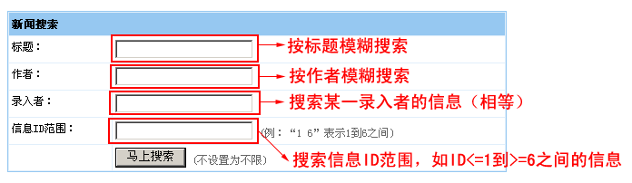

| 帝国CMS内置强大的搜索功能，用户只需制作搜索表单指向搜索处理页面即可实现相应搜索。本文讲解：搜索表单制作语法。 |
|
||
| 搜索表单的变量说明 |
| 变量名 | 说明 | 例子 |
| 搜索表单提交地址 | POST方式：/e/search/index.php | <form name="searchform" method="post" action="/e/search/index.php"> |
| GET方式：/e/search/?searchget=1 | /e/search/?searchget=1&keyboard=帝国&show=title | |
| keyboard | 搜索关键字变量 | <input name="keyboard" type="text"> |
| show | 搜索字段变量(多个字段用","隔开。搜索字段必须是后台系统模型开启搜索项的字段) | <input type="hidden" name="show" value="title,newstext"> |
| classid | 搜索栏目ID(不设置为不限，多个栏目可用","隔开，设置父栏目会搜索所有子栏目) |
<input type="hidden" name="classid" value="1"> |
| ztid | 搜索专题ID(不设置为不限，多个专题可用","隔开) | <input type="hidden" name="ztid" value="1"> |
| tbname | 按数据表搜索(需与搜索模板ID结合) 按表时，搜索自定义字段一定要注意搜索模板选择的所属系统模型是否对应。 |
<input type="hidden" name="tbname" value="news"> |
| tempid | 所用搜索模板ID(一般跟按表搜索结合使用) |
<input type="hidden" name="tempid" value="1"> |
| starttime与endtime | 分别为搜索发布起始时间与结束时间的信息(不填为不限．格式：2008-02-27) | <input name="starttime" type="text"
value="0000-00-00" size="12"> <input name="endtime" type="text" value="0000-00-00" size="12"> |
| startprice与endprice | 分别为商品价格的起始价格与结束价格(price字段,不填为不限) | <input name="startprice" type="text"
value="0" size="6"> <input name="endprice" type="text" value="0" size="6"> |
| 搜索特殊字段 | id : 按信息ID搜索 keyboard : 按关键字搜索(可实现按tags列出信息) userid : 按发布者用户ID搜索 username : 按发布者用户名搜索 |
<input type="hidden" name="show" value="keyboard"> |
| member | 值为0则不限制 值为1则为只搜索会员投稿的信息 值为2则为只搜索管理员增加的信息 |
<input type="hidden" name="member" value="1"> |
| orderby | 排序字段： 可指定搜索结果页面的排序字段名。不指定为按发布时间(newstime)排序。排序字段必须是后台系统模型开启排序项的字段。 |
<input type="hidden" name="orderby" value="id"> |
| myorder | 排序方式： 0:倒序排列(默认) 1:顺序排列 |
<input type="hidden" name="myorder" value="1"> |
| andor | 设置多条件查询之间关联关系，有两种： or : 或者的关系(默认) and : 并且的关系 |
<input type="hidden" name="andor" value="and"> |
| hh | 逻辑运算联结符变量： LT : 小于 GT : 大于 EQ : 等于 LE : 小于等于 GE : 大于等于 NE : 不等于 IN : 包含(搜索关键字用空格隔开每个值) BT : 范围，两个值之间(搜索关键字用空格隔开两个值) LK : 模糊查询(默认) |
<input type="hidden" name="hh" value="LK"> |
| 单条件搜索的表单制作范例 |
| 一、表单范例1： | |
| 1、用Dreamweaver制作好表单： | |
| 设计视图： 代码模式下的表单代码
|
|
| 2、最终搜索表单显示效果为下图： | |
| 搜索表单多条件并列搜索的语法说明 |
| 多字段、多逻辑运算联结符并列搜索 |
| (一)、多字段并列搜索：有“字符串”与“数组”两种传递方式 |
| 1、字符串传递为例子： |
| <input type="hidden" name="hh" value="LK"> <input type="hidden" name="show" value="title,writer"> <input type="hidden" name="keyboard" value="标题,作者"> （说明：上面为模糊查询title字段包含“标题”字符或者writer字段包含“作者”的信息） |
| 2、数组传递为例子： |
| <input type="hidden" name="hh" value="LK"> <input type="hidden" name="show[]" value="title"> <input type="hidden" name="keyboard[]" value="标题"> <input type="hidden" name="show[]" value="writer"> <input type="hidden" name="keyboard[]" value="作者"> （说明：上面为模糊查询title字段包含“标题”字符或者writer字段包含“作者”的信息） |
| （二）、多逻辑运算联结符并列搜索 |
| 1、字符串传递为例子： |
| <input type="hidden" name="hh" value="LK,EQ"> <input type="hidden" name="show" value="title,writer"> <input type="hidden" name="keyboard" value="标题,作者"> （说明：上面为模糊查询title字段包含“标题”字符或者writer字段等于“作者”的信息） |
| 2、字符串传递为例子： |
| <input type="hidden" name="show[]"
value="title"> <input type="hidden" name="hh[]" value="LK"> <input type="hidden" name="keyboard[]" value="标题"> <input type="hidden" name="show[]" value="writer"> <input type="hidden" name="hh[]" value="EQ"> <input type="hidden" name="keyboard[]" value="作者"> （说明：上面为模糊查询title字段包含“标题”字符或者writer字段等于“作者”的信息） |
| 多条件并列搜索的表单制作范例 |
| 二、表单范例2：实现按标题、作者、录入者与信息ID同时搜索的表单 | |
| 1、用Dreamweaver制作好表单： | |
设计视图： 代码模式下的表单代码 上面例子html代码
|
|
| 2、最终搜索表单显示效果为下图： | |
|  |